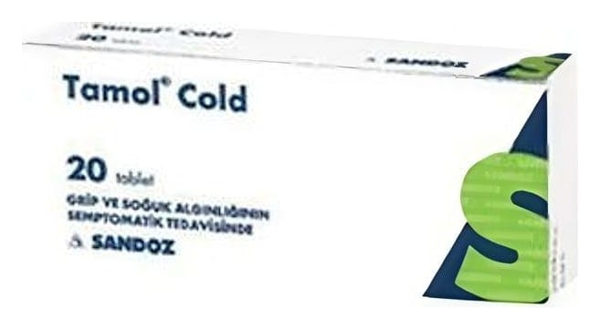

Tamol Cold Tablet, 20 Adet

Ne için kullanılır
KT · Bölüm 1 TAMOL COLD tabletin her bir tableti etkin madde olarak 500 mg parasetamol, 30 mg psödoefedrin hidroklorür ve 15 mg dekstrometorfan hidrobromür içerir. Parasetamol, ağrı kesici ve ateş düşürücü etkilere sahiptir. Dekstrometorfan, öksürüğün sıklık ve şiddetini azaltır. Psödoefedrin, üst solunum yollarındaki öd emi (hücre ve dokularda anormal bir şekilde sıvı toplanması) azaltır, sinüs (yüz kemiklerindeki hava boşlukları) salgılarının atılımını artırır ve ağız boşluğu ile kulağı bağlayan ve kulak borusundaki hava basıncıyla a tmosfer basıncının dengesini sağlayan östaki borusunun genellikle alerji, soğuk alg ınlığı v eya diğer bir üst solunum yolu enfeksiyonundan (iltihap oluşturan mikrobik hastalık) kaynaklan an tıkanıklığını giderir. TAMOL COLD, 20 tabletlik ambalajlarda bulunur. TAMOL COLD, ateş, ağrı ve öksürük, burun akıntısı ve tıkanıklığı ile seyreden soğuk alg ınlığı ve gribal enfeksiyonların belirtilerinin tedavisinde kullanılır.